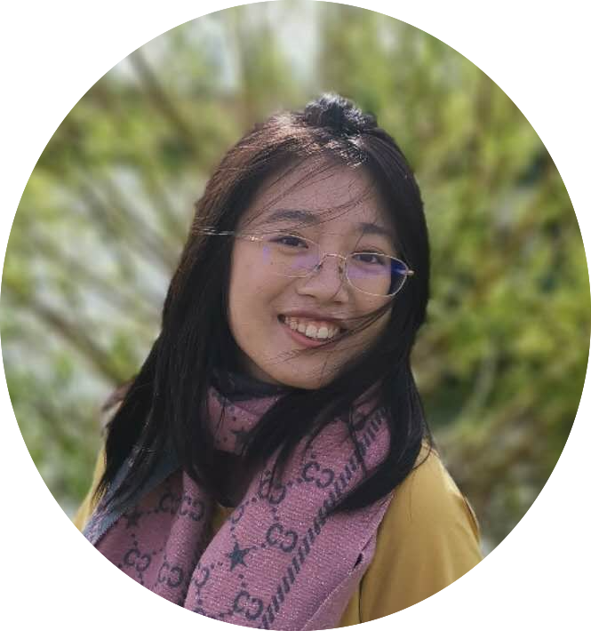

AI Scientist, Prior Labs
I am a machine learning researcher trying to understand intelligence. I am currently an AI scientist at Prior Labs, where I work on scaling laws and foundation models for causal inference. In 2026 I was named to the Forbes 30 Under 30 Europe list for Science & Healthcare. I did my PhD at the University of Cambridge with Ferenc Huszár and at the Max Planck Institute for Intelligent Systems with Bernhard Schölkopf, and interned at Meta FAIR in New York.
My long-term interest is AI + Science: building a physics-inspired mathematical theory of intelligence, and using AI to accelerate scientific discovery.
Collaborations. I am always happy to connect with people working on science of AI and / or AI for science. Contact me sguo26v @ gmail.com.
* equal contribution · † equal supervision · full list on Google Scholar